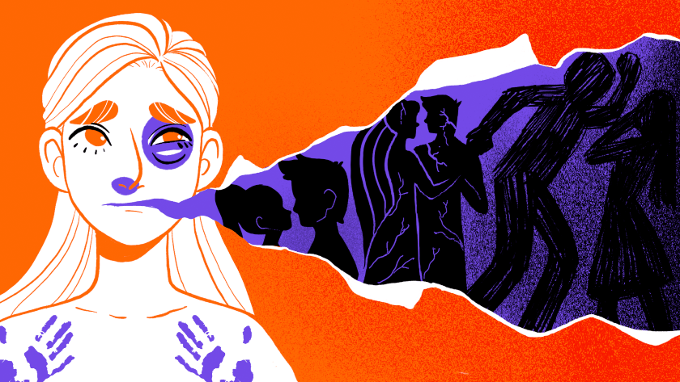

Si sufres algún tipo de violencia, no calles, no tengas miedo. ¡PUEDES SER ESCUCHADO!
Tu voz es importante y tienes derecho a recibir ayuda. Estamos a tu disposición para escucharte, orientarte y brindarte el apoyo que necesitas.

¿Cómo puede ayudarte Centinela Digital?
Centinela Digital te proporcionará ayuda identificando el tipo de violencia que estás padeciendo, brindándote orientación y acompañamiento durante el proceso. Además, te ayudará a comunicar tu situación con las instituciones correspondientes, para que puedas recibir la atención y el apoyo que necesitas.
Tu seguridad y bienestar son importantes. Queremos ayudarte a encontrar una manera de hacer escuchar tu situación.
¡TU VOZ PUEDE HACER LA DIFERENCIA!
Si has vivido o presenciado algún tipo de violencia, puedes realizar un reporte a través de nuestra plataforma. Completa el formulario con la información solicitada. Tu reporte nos permitirá conocer tu situación, identificar el tipo de violencia y facilitar la comunicación con las instituciones correspondientes.
¿Qué puedes hacer?
- Identificar el tipo de violencia que deseas reportar.
- Proporcionar información sobre tu situación.
- Registrar los datos necesarios para tu reporte.
- Enviar la información mediante nuestro formulario.
- Obtener el registro correspondiente de tu reporte.
¿Estás listo para realizar tu reporte?
REALIZAR MI REPORTE